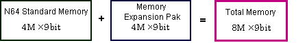
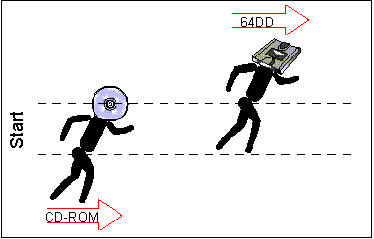
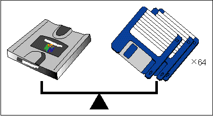
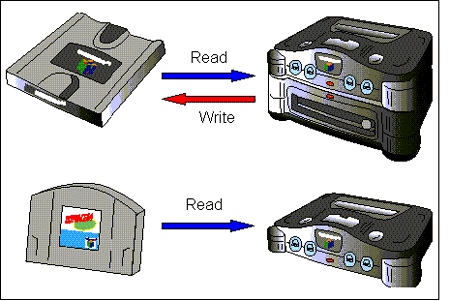
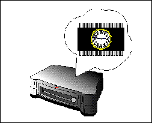
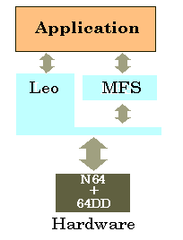

64DD adds a 4M x 9bit (36Mbit) memory expansion pack to the N64 Control Deck's standard 4M x 9bit (36Mbit) of main memory. This expands N64 main memory to 8M x 9-bit (72M-bit).

64DD boasts a maximum data transfer rate of 1MByte/sec, which is quick for disk media and about 5.4 times faster than the CD-ROM drives used in other game machines.

Although in outward appearance the disk is only a little larger than a floppy disk (100 x 100 x 10mm), it has a memory capacity of 64.45 MBytes, which is much larger than a floppy disk.

The disk is not simply a medium for storing game programs, although it can be used in that way as a read-only medium. It is also possible to designate separate read-only (ROM) and writable (RAM) areas on the same disk.
Up to 38.44 MBytes can be designated as RAM on each disk, and this writable area can be used to store vast amounts of user data.

64DD incorporates a battery-backup real-time clock. Since this clock operates even when the power is turned off, it is possible to reflect real time in games.

Since the work of directly programming disk-control code can be vastly reduced by efficiently managing the 64DD's expanded RAM area, the Multi File System (MFS) and an MFS library are provided as Nintendo's recommended file system.
With MFS, data in the ROM area as well as the RAM area can be managed in file units.
The special Leo Library for 64DD is available as a low-level function library that is closer to the hardware than the MFS that controls the 64DD. The Leo Library is used for disk access by the MFS Library, which is a high-level function library.
An overview of the location of these libraries is illustrated below.

Nintendo® Confidential
Copyright © 1999
Nintendo of America Inc. All Rights Reserved
Nintendo and N64 are registered trademarks of Nintendo
Last Updated March, 1999